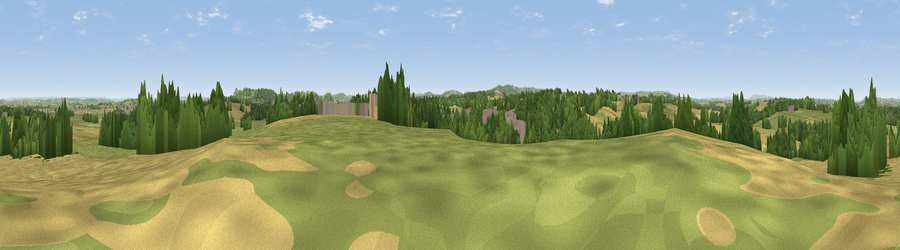

Viewpoint near South Petherton
#19242 in England · top 46% of its area beats it · near South PethertonWhere it is
The exact computed spot (ST 43325 17675). Click the marker for map links.
The view, rendered

A 360° render of this exact spot computed from the terrain model, tree cover and land cover — summer colours, afternoon light, calibrated against photographs of famous viewpoints. Real trees, hedges and buildings will differ in detail.
The panorama
Grey silhouette: terrain skyline in each direction (720 bearings, Earth curvature and refraction included). Dashed green: skyline with trees (+15 m) and buildings (+8 m) as obstacles. Blue strip: how far the ground is visible on each bearing.
Where the view opens
Wedge length = distance to the farthest visible ground on that bearing (vegetation-aware). Rings at 10, 25 and 50 km.
What fills the view
38% grassland · 38% cropland · 19% woodland · 5% built-up
Angular shares of the visible panorama (visual magnitude), not map area. Landscape diversity 0.52 (0–1 Shannon).
Key numbers
More beautiful places nearby
The staircase of upgrades: each row has a higher view potential than everything closer. Driving times are estimates from straight-line distance, calibrated against real road routing — check an actual route before setting out.
| Place | Direction | Drive | Score |
|---|---|---|---|
| Burrow Hill | NW · 3 km | ~7 min | 67.2 |
| Ham Hill | E · 4 km | ~10 min | 73.5 |
| Viewpoint near Hewish | SSW · 8 km | ~16 min | 78.5 |
| Lewesdon Hill | S · 17 km | ~29 min | 83.3 |
| Viewpoint near North Chideock | S · 25 km | ~41 min | 87.1 |
| Golden Cap | S · 26 km | ~41 min | 88.7 |
| The Knoll | SSE · 32 km | ~49 min | 91.0 |
50.95570, -2.80827 · source: screening · position refined by local search. Computed location — check access rights before visiting.